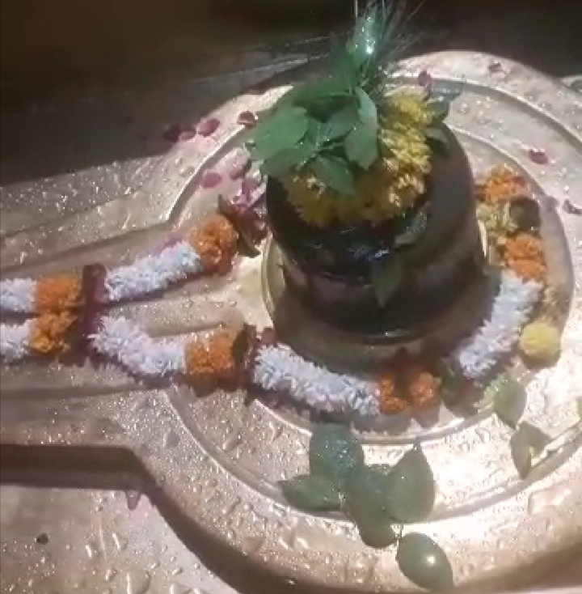

<?xml version="1.0" encoding="UTF-8"?><rss version="2.0"
	xmlns:content="http://purl.org/rss/1.0/modules/content/"
	xmlns:wfw="http://wellformedweb.org/CommentAPI/"
	xmlns:dc="http://purl.org/dc/elements/1.1/"
	xmlns:atom="http://www.w3.org/2005/Atom"
	xmlns:sy="http://purl.org/rss/1.0/modules/syndication/"
	xmlns:slash="http://purl.org/rss/1.0/modules/slash/"
	>

<channel>
	<title>Brihaspateeshwar &#8211; Varanasi Temples</title>
	<atom:link href="index.html" rel="self" type="application/rss+xml" />
	<link>../../../../../index.html</link>
	<description>Temples of Varanasi as referred to in Kashi Khand</description>
	<lastBuildDate>Thu, 19 Jun 2025 05:16:46 +0000</lastBuildDate>
	<language>en-US</language>
	<sy:updatePeriod>hourly</sy:updatePeriod>
	<sy:updateFrequency>1</sy:updateFrequency>
	<generator>https://wordpress.org/?v=4.6.29</generator>
	<item>
		<title>BRIHASPATEESHWAR</title>
		<link>../../../../../shiva-temples/brihaspateeshwar/index.html</link>
		<pubDate>Sun, 09 May 2010 03:47:12 +0000</pubDate>
		<dc:creator><![CDATA[admin]]></dc:creator>
				<category><![CDATA[Brihaspateeshwar]]></category>
		<category><![CDATA[Other Shiva Temples (A-D)]]></category>
		<category><![CDATA[Shiva Temples]]></category>
		<category><![CDATA[brihaspateeshwar]]></category>
		<category><![CDATA[brihaspateeshwar temple]]></category>
		<category><![CDATA[brihaspati]]></category>
		<category><![CDATA[brihaspati temple]]></category>
		<category><![CDATA[scindia]]></category>

		<guid isPermaLink="false">../../../../../p=249.html</guid>
		<description><![CDATA[Brihaspati or Guru was the son of Angira.  He was having all the good qualities of a gentleman, leader, good Samaritan, respectful to the elders and teachers etc. He came to Kashi, installed a Shiv Ling and performed prayers to Lord Shiva for several years at a stretch.  Lord Shiva appeared before him through that [&#8230;]]]></description>
				<content:encoded><![CDATA[<p>Brihaspati or Guru was the son of Angira.  He was having all the good qualities of a gentleman, leader, good Samaritan, respectful to the elders and teachers etc.</p>
<p>He came to Kashi, installed a Shiv Ling and performed prayers to Lord Shiva for several years at a stretch.  Lord Shiva appeared before him through that Ling in the form of Jyoti (Divine Light).</p>
<p>On seeing Lord Shiva, Brihaspati became ecstatic and started singing praises of Lord Shiva whereupon the Lord granted that Brihaspati will be the Lord of all Devas. Since Brihaspati had sung prayers of Lord Shiva, the latter also granted that Brihaspati will be called  Vachaspati (having excellence in speech). The Ling installed by Brihaspati will be called  Brihaspateeshwar.</p>
<p>Lord Shiva further stated, a devotee who performs pooja etc. of Brihaspateeshwar on a regular basis will get all his wishes fulfilled.  Lord Shiva then summoned Lord Brahma, Lord Indra and other Devas. With all those celestials around,  Lord Shiva ordained that Vachaspati (Brihaspati) will be the Guru (Teacher) of all Devas.  Vachaspati will become the lord of all intelligent persons.</p>
<p></p>
<p style="text-align: center;"><strong>(BRIHASPATEESHWAR)</strong></p>
<p>A devotee who performs prayers at Brihaspateeshwar on Thursday when Pushyami Star conjoins, will be successful in all his endeavours.  (Pushyami star is called Poosam in Tamil and Pooyam in Malayalam).</p>
<p>&nbsp;</p>
<p><strong>&#8212;&#8212;&#8212;&#8212;&#8212;&#8212;&#8212;&#8212;&#8212;&#8212;&#8212;&#8212;&#8212;&#8212;&#8212;&#8212;&#8212;&#8212;&#8212;&#8212;&#8212;&#8212;&#8212;&#8212;&#8212;&#8212;&#8212;&#8212;&#8212;&#8212;&#8212;&#8212;&#8212;&#8212;-</strong></p>
<p><strong>Kashi Khand, Chapter 17, Shlok 60</strong></p>
<p><strong>गुरुपुष्यसमायोगे  लिङ्गमेतत्समर्च्य च</strong></p>
<p><strong>यत्करिष्यन्ति मनुजास्तत्सिद्धिमधियास्यति  </strong></p>
<p>&nbsp;</p>
<p><strong>When Pushya Nakshatra falls on Thursday, if a devotee undertakes any work after worshipping Brihaspateeshwar, he will succeed in his efforts. </strong></p>
<p><strong>&#8212;&#8212;&#8212;&#8212;&#8212;&#8212;&#8212;&#8212;&#8212;&#8212;&#8212;&#8212;&#8212;&#8212;&#8212;&#8212;&#8212;&#8212;&#8212;&#8212;&#8212;&#8212;&#8212;&#8212;&#8212;&#8212;&#8212;&#8212;&#8212;&#8212;&#8212;&#8212;&#8212;&#8212;&#8212;</strong></p>
<p>&nbsp;</p>
<p>A person who prays to Brihaspateeshwar for six consecutive months is cleansed of all his sins. (Kashi Khand, Chapter 17).</p>
<p><strong><span style="text-decoration: underline;"> </span></strong></p>
<h1>LOCATION OF THE TEMPLE</h1>
<p>The temple is located at House No. Ck.7/133, Scindia Ghat, Varanasi, opp. Atma Veereshwar temple.  One can travel upto Chowk by Cycle Rickshaw and walk to this place via Sankata Devi Temple (famous landmark). Alternatively, devotees can approach the place by boat upto Scindia Ghat and climb up the steps.</p>
<p>&nbsp;</p>
<p>Please watch our YouTube Video about Brihaspateeshwar at following Link</p>
<p>&nbsp;</p>
<p><a href="https://www.youtube.com/watch?v=mSfeX2v5ESA&amp;t=19s">https://www.youtube.com/watch?v=mSfeX2v5ESA&amp;t=19s</a></p>
<p>&nbsp;</p>
<p><strong><span style="text-decoration: underline;">TYPES OF POOJAS</span></strong></p>
<p>The temple is open from 06.00 a.m to 9.00 p.m.   Aarties are performed at 6.00 a.m., 2 p.m. and 10 p.m. Besides the above aarties, special aarties are held on Thursdays and Fridays at 11.00 p.m. also.  While regular poojas are conducted by the Priest, Special poojas are performed on important days like Shivratri and certain Ekadasi days. Aarti is performed daily at morning, afternoon and night.</p>
<h2></h2>
]]></content:encoded>
			</item>
	</channel>
</rss>
